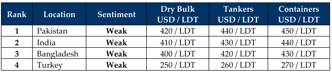

inWeekly Demolition Reports14/07/2025

Trump’s twisted tariff tantrums went terminal this week after his self-imposed July 1st deadline to major U.S. trade partners on presentingpotential proposals to offset his tariffs saw no response from trading nations that were in his crosshairs. As a result, a new deadline of August 1st, 2025, has been put forth as the final date to respond, all while tariffs ranging from 15% to 50% on nations from Bangladesh to Brazil are reportedly set to automatically kick into gear by the end of this month. Expectedly, stock markets went haywire in the early hours of Friday trading and sent virtually every major index into a tailspin, defying their collective performances across recent weeks. And while U.S. inflation continues to rise, the U.S. Dollar yoyoed against all of the major ship recycling nation currencies, even seeing the Turkish Lira finally breach the dreaded TRY 40 mark this week. Local steel plate prices also surprised everyone the industry as all ship recycling destinations (even China) saw levels climb in unison this week. And while the news certainly seems positive for upcoming vessel pricing, recycling tonnage remains amiss at the bidding tables as the Baltic Exchange reported a 13.5% jump in the freight index this week, primarily on the back of the Cape index that jumped a whopping 26.4%, whilst the Panamax and Supramax indices added 8% and 2% respectively.
In the interim, international ship recycling markets continue suffering over these summer / monsoon months as prices fall and an overall temperament of diminishing demand settles in on the back of volatile fundamentals, a Hong Kong Convention that finally came into effect on June 26th, a rising reticence amongst recyclers from offering firm on potential units, and ship owners and cash buyers who remain hesitant to test the higher priced offerings from the yet-to-be certified HKC yards in Pakistan, simply on the basis on an interim DASR certificate issued to the yard. Increased regulatory and documentary demands also continue to cause confusion / consternation writ large, and this is likely adding to the reduced number of candidates on show. While several large(r) LDT units such as LNGs and even a VLOC have been recycled over the last few months, it has remained a trickle in the supply of tonnage throughout the year, against the backdrop of an expectedly busier 2025. Surprisingly however, this week has seen the number of units and (especially) the volume of LDT at certain destinations improve, and markedly at that.
As a result, incessant market volatilities have seen fundamentals drive prices from the highs of USD 600/Ton in January of 2024, down to below 400/LDT on certain vessels given that one Handymax bulker was concluded at about USD 390/LDT into Bangladesh last week, as market movements scare potential owners off. Although this has traditionally been a slower time of the year for ship recycling markets given that the incessant rains drench the landscape, leading to partial yard closures and laborers returning to hometowns as cutting / ship recycling activities slow and recycled steel fails to shift to re-rolling mills. Governments too, have their roles to play in stimulating their economies as there have been contrasting fortunes in Bangladesh, India and Pakistan over the last year, leaving prices precariously poised at the mid-way point of this year, with still no clarity ahead. At the far end, as the Turkish Lira enters uncharted territory, Aliaga recyclers managed to snag a unit?

📄 Download PDF: Ship-recycling-market-insight-Week-28-07-11-2025-Summer_Sufferance.pdfSource: GMS,Inc.https://www.gmsinc.net/gms_new/index.php/web